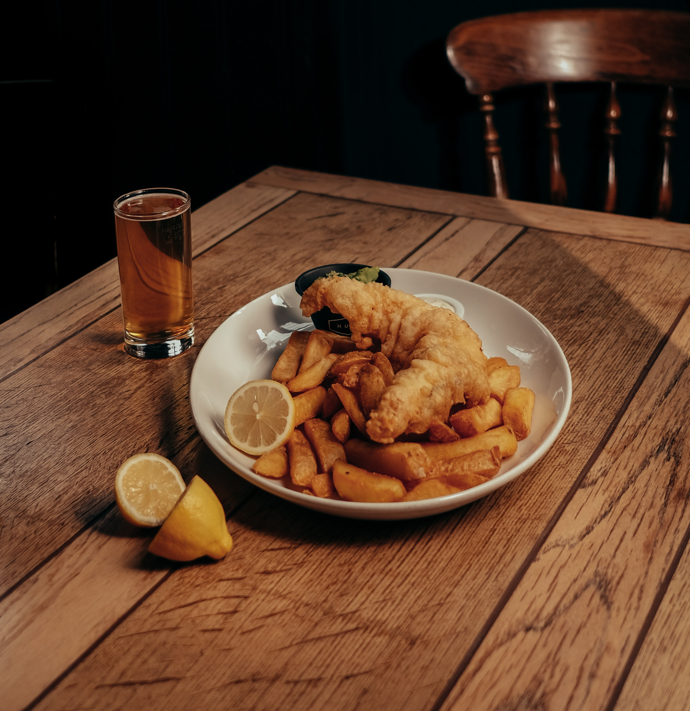

Fish and Chips

Description
Incredients
- 4 large potatoes, peeled and cut into strips
- 1 cup all-purpose flour
- 1 teaspoon salt
- 1 cup of milk
- 1 egg
- 1 quart vegetable oil for frying
- 1 1/2 pounds cod fillets
Steps
- Place potatoes in a medium-size bowl of cold water. In a separate medium-size mixing bowl, mix together flour, baking powder, salt, and pepper. Stir in the milk and egg; stir until the mixture is smooth. Let mixture stand for 20 minutes.
- Preheat the oil in a large pot or electric skillet to 350 degrees F (175 degrees C).
- Fry the potatoes in the hot oil until they are tender. Drain them on paper towels.
- Dredge the fish in the batter, one piece at a time, and place them in the hot oil. Fry until the fish is golden brown. If necessary, increase the heat to maintain the 350 degrees F (175 degrees C) temperature. Drain well on paper towels.
- Fry the potatoes again for 1 to 2 minutes for added crispness.